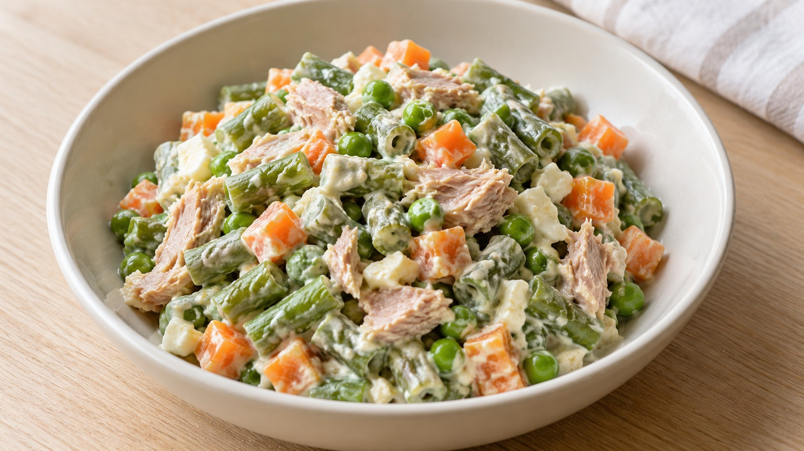

Ensaladilla

Descargar receta en PDF · A4Más de Vegetales
Ingredientes
- 400 g mezcla congelada para ensaladilla (o 150 g judías verdes, 150 g zanahoria y 100 g guisantes frescos)
- 80 g atún al natural (peso escurrido)
- 2 huevos
- 60 g queso fresco batido natural
- 10 g aceite de oliva virgen extra
- 10-15 ml zumo de limón o vinagre
- 20 g pepinillos (opcionales)
- 40 g pimiento de piquillo o asado (opcional)
- Sal (solo si hace falta)
Preparación
Pon los huevos en un cazo, cúbrelos con agua y lleva a ebullición. Cuenta 10-11 minutos desde que empiece a hervir suavemente. Enfríalos en agua fría y pélalos. Mientras se cuecen, prepara las verduras.
Con mezcla congelada: cuece los 400 g sin descongelar siguiendo las instrucciones del envase. Si usas verduras frescas, limpia 150 g de judías verdes y 150 g de zanahoria, córtalas en trozos pequeños y cuece en agua hirviendo suave hasta que estén tiernas, unos 8-12 minutos según el corte. Añade los 100 g de guisantes durante los últimos 3-5 minutos, o el tiempo que indique su envase. Escurre muy bien y extiende las verduras en una fuente para que pierdan calor.
Tritura los huevos cocidos con el queso fresco batido, los 10 g de aceite y 10 ml de limón o vinagre hasta obtener una salsa lisa. Si queda demasiado espesa, añade agua fría de cucharadita en cucharadita. Prueba antes de añadir sal y ajusta la acidez con el limón o vinagre restante.
Escurre bien el atún. Si los usas, pica los pepinillos y el pimiento, también escurridos. Cuando las verduras hayan perdido el calor, mézclalas suavemente con el atún, los opcionales y la salsa.
Guarda la ensaladilla tapada en la nevera hasta que esté fría. Remueve con suavidad antes de servir y reparte en dos raciones.
Claves
Alternativa fresca para dos personas: 150 g de judías verdes, 150 g de zanahoria y 100 g de guisantes. Patata: solo si lo especifica en las pautas nutricionales. Revisa la composición de la bolsa: muchas mezclas ya la incluyen; en ese caso forma parte de los 400 g, no se añade aparte. Si usas patata fresca, cuenta su peso dentro de los 400 g de verduras y cuécela hasta que esté tierna. Escurrir y enfriar bien las verduras evita que la salsa quede aguada. El tiempo indicado no incluye el enfriado.
Fuente
🌿 Adaptada de una receta de Eva, la nutricionista